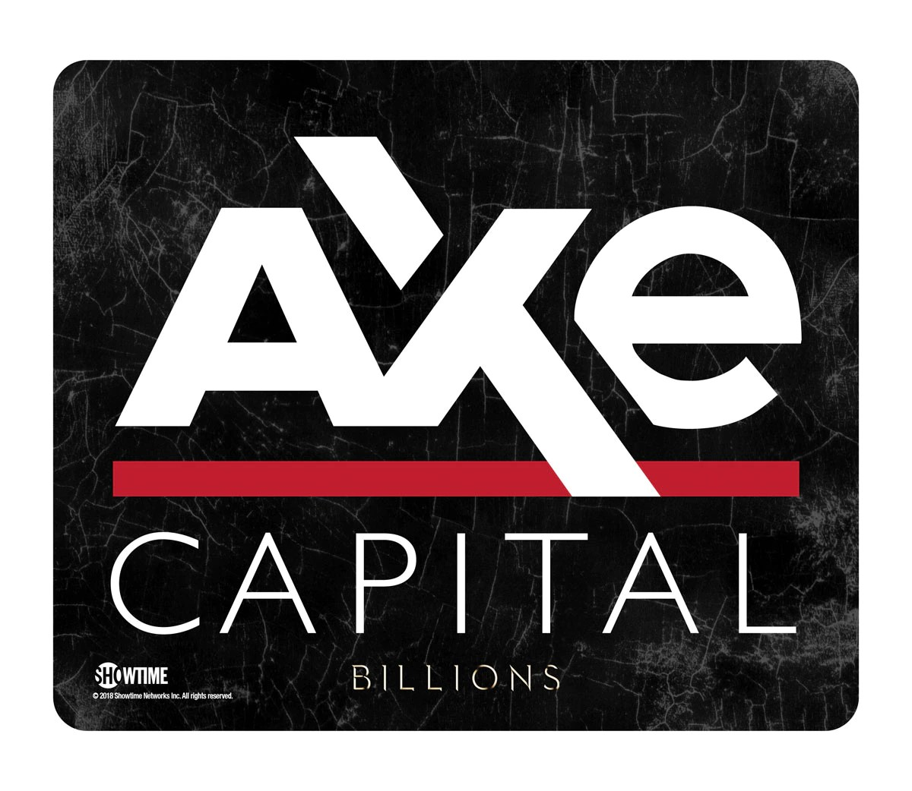

O nama i ulaganja
U svijetu koji se neprestano mijenja, AXE Capital ostaje čvrsto usmjeren prema budućnosti, uvodeći nove ideje i tehnologije kako bi svojim klijentima omogućio ostvarivanje njihovih financijskih ambicija.
Ulaganje u Hrvatskoj može se provesti kroz različite instrumente i tržišta, ovisno o vašim financijskim ciljevima, preferencijama rizika i vremenskom horizontu. Evo nekoliko općih koraka koje možete razmotriti prilikom razmatranja ulaganja u Hrvatskoj:
Postavljanje ciljeva: Definirajte jasne financijske ciljeve. Pitanja koja biste si trebali postaviti uključuju koliko novca želite uložiti, koji je vaš vremenski horizont ulaganja te koji su vaši ciljevi dobiti ili prihoda.
Financijsko obrazovanje: Stjecanje osnovnog razumijevanja o različitim vrstama investicija i tržišta ključno je prije nego što donesete odluke o ulaganju. Osvježite svoje znanje o dionicama, obveznicama, nekretninama i drugim financijskim instrumentima.
Konzultacija s financijskim savjetnikom: Ako niste sigurni kako pristupiti ulaganju ili imate specifične potrebe, razmotrite konzultaciju s kvalificiranim financijskim savjetnikom. Oni mogu pružiti personalizirane savjete temeljene na vašoj financijskoj situaciji i ciljevima.